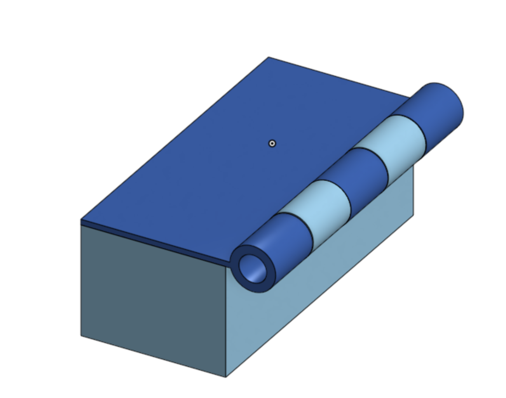
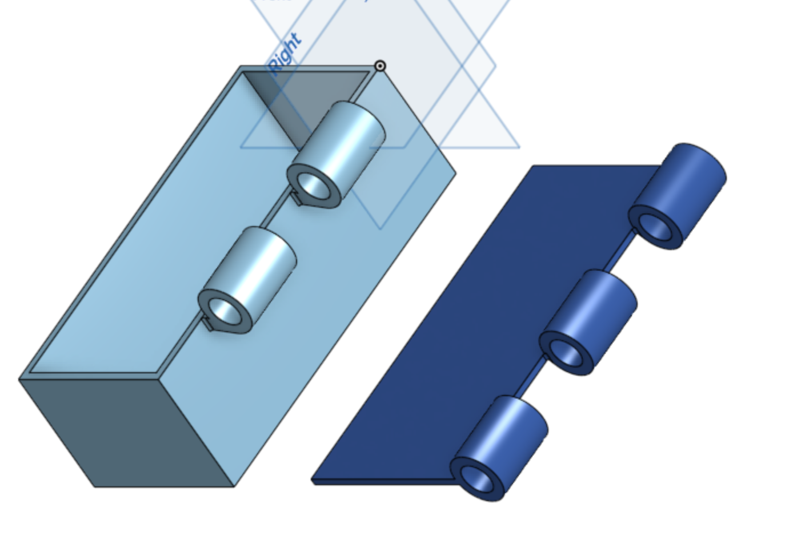
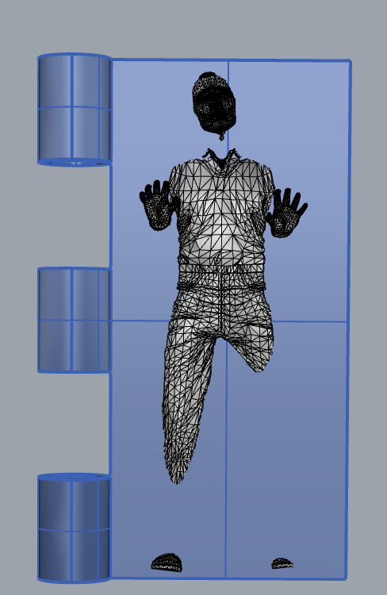

How I completed this assignment:
I began this assignment by doing some research on hinged boxes and how to create on in a CAD software. I used OnShape to create my box. I followed a tutorial online and modified it for my needs. I used the assembly feature to make sure my pieces would fit together. I then exported my project in two parts, the box as an STL, and the lid as a rhino file. Using Rhino, I then added the Han Solo STL I found on Thingiverse to the lid and resized it as needed. I then exported that file as an STL.
  
Bill of Materials:
- Filament: Purchased in Fluke
- Wooden Dowel: Purchased from Michael's